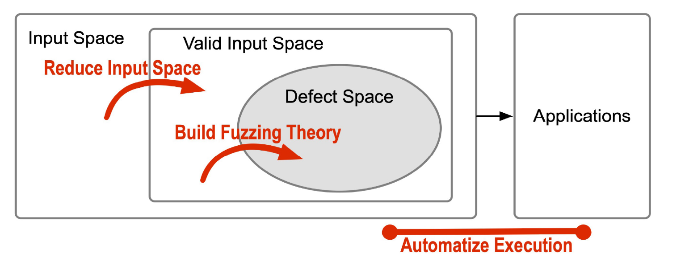
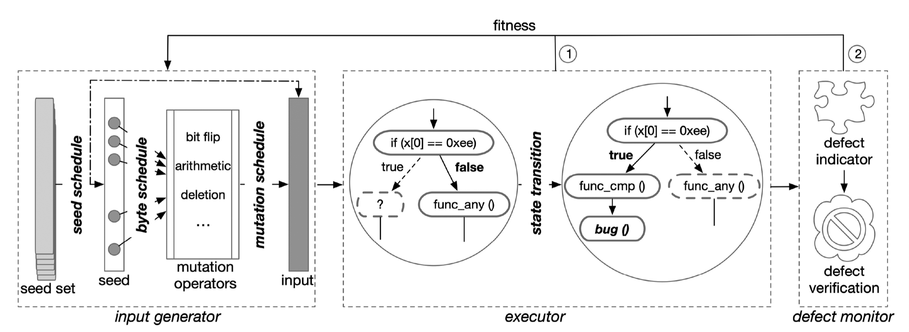
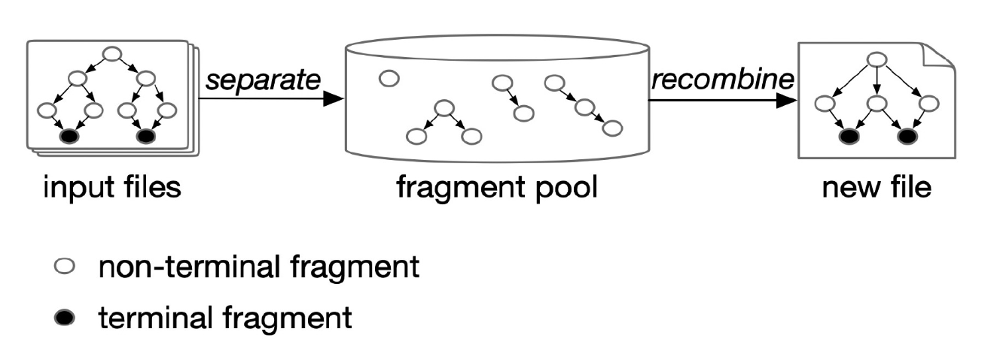

Fuzzing A survey for Roadmap
1 Introduction
Fuzzing has knowledge gaps for developing efficient defect detection solutions.

There are three main gaps:
- Sparse defect space of inputs
- only some specific inputs can trigger the defects
- a highly efficient fuzzing algorithm requires a sophisticated understanding of both programs under test (PUTs) and security flaws
- Strict valid input space
- more complex specification of inputs is required because of the growth of modern applications
- generated inputs should exercise different execution states to improve the efficiency of fuzzing
- Various targets
- many applications require extra effort to be tested automatically for high efficiency
- hard to record potential real flaws since execution crash is used as the indicator for exception (underlying flaws may not manifest)
Fuzzing consists of three components:
- input generator
- executor
- defect monitor

2 Overview of Fuzzing
Terminologies
seed: retained input that achieves better fitness (eg. new coverage).
fitness: measure the quality of a seed or input.
mutators: mutation operators.
power schedule: determine the energy assigned to the seed.
energy: the number of mutations assigned for the current fuzzing round.
fuzzer: the implementation of a fuzzing algorithm.
input generator: provides the executor with numerous inputs.
executor: run target programs on the inputs.
Input Generation Based Classification
Generation-based Fuzzing
- Generate inputs from scratch based on grammars or valid corpus.
- Get inputs directly from a seed set.
Mutation-based Fuzzing
- Mutate existing inputs (seeds) to get new inputs.
- Perform seed schedule, byte schedule, and mutation schedule on a seed set to obtain inputs.
Information Amount Based Classification
Black Box
- Does not have knowledge about the internal states of each execution.
- Optimize fuzzing processes via utilizing input formats or different output states.
Grey Box
- Obtain the knowledge of execution states between blackbox and whitebox.
White Box
- Obtain all the internal knowledge of each execution.
- Systematically explore the state space of target programs.
- Utilize concolic execution (i.e., dynamic symbolic execution) to analyze target programs.
3 Fuzzing Theory
Fuzzing theories intend to optimize the fuzzing process so that fuzzing can expose defects more effectively and efficiently.
3.1 Seed Set Selection
Focusing on minimizing the size of a set.
- i.e., it selects the fewest number of seeds that can cover all the discovered code coverage.
The redundancy of seeds wastes computing resources on examining the well-explroed code regions.
MSCP(minimal set cover problem)
- Minimize the subsets that contain all elements.
- An NP-hard problem.
- A greedy polynomial approximation algorithm is used to obtain the minimal set.
3.2 Seed Schedule
Aim to solve the problem of
- which seed is to be selected for the next round
- the time budget for the selected seed
- optimize the number of times to mutate the selected seeds instead of the time budget in practice
The most critical challenge is the agnostic of undiscvovered code coverage or bugs.
- Whether an input can trigger a bug cannot be known before verifying bugs.
- The probability distribution of program behaviors cannot be obtained before examining code lines.
Mathematically global optimal solution is impossible to find.
- Properties of defects (e.g., bug arrival)
- Execution states (e.g., edge transition)
3.2.1 Fitness by Bugs
Fuzzing generally utilizes two types of fitness for optimization problems.
- fitness based on bugs
- execution states (e.g., code coverage)
fitness: a scalar that measures the quality of a seed or input.
In order to maximize the number of bugs:
- schedule the time budget of each seed while randomly or sequentially
selecting seeds
- without considering the execution state, the problem can be simplified as an ILP (Integer Linear Programming) problem
- regard the bug arrival process as the WCCP (weighted Coupon
Collector's Problem)
- estimates how much time is required before a new bug arrives in the process
- use the distribution of all bugs (by observing the discovered bugs) to assign minimum time for seeds to expose new bugs
3.2.2 Fitness by State Transition (Markov Chain)
To mitigate complex conditions guarded by deep bugs, fuzzers calculate fitness based on execution states (e.g., code coverage).
A popular theory for modeling state transition is the Markov chain, which maintains a probability table . Fuzzers calculate the probabilities by recording the frequencies of block transitions during fuzzing.
- For instance, if an edge AB has been examined 30 times while its neighbor edge AC has been examined 70 times, the transition probabilities of edges AB and AC are 0.3 and 0.7, respectively
- The lower the transistion probability, the better the fitness.
The mutation-based fuzzing generates new inputs by mutating seeds, and each input exercises an execution path.
The state transition is also the transition from a path
- AFLFast: the minimum energy required for a state
to discover a new state is , where is the transition probability. - More energy will be assigned to less frequent paths (i.e., the paths with low transition probabilities).
3.2.3 Fitness by State Transition (Multi-armed Bandit)
Markov chain is not profound enough to model the seed schedule of fuzzing. It requires transition probability among all states so that fuzzing makes a proper decision.
many states have not been examined during fuzzing, which indicates that the decisions based on the Markov chain are not optimal.
For block transistions
- Use the rule of three in statistics for the transitions from a discovered block to an undiscovered block.
For path transitions
- Round-Robin schedule: split the time budget between seeds equally.
- cannot determine when to switch from Round-Robin to Markov chain.
The balance between traversing all seeds and focusing on a specific seed is a classic "exploration vs. exploitation" problem.
For a Multi-armed Bandit (MAB) problem
- exploration: the process when the player plays all arms to obtain their reeward expectations.
- exploitation: the process when the player only selects arms with the highest reward expectations.
The total number of seeds is increasing and the reward expectation of a seed is decreasing during fuzzing.
Varaiant of the Adversarial Multi-armed Bandit Model (VAMAB) is proposed by EcoFuzz to solve the problem.
- Adaptively assign energy for unfuzzed seeds (i.e., exploration process).
- Estimate the expectation of a seed
as , where is the self-transition probability. - A low self-transition probability indicates that mutations of the seed can discover other paths (new) with a high probability.
3.2.4 Fitness by State Discovery
The essential objective of fuzzing is to discover new states (e.g., new code coverage, new crashes, or new bugs).
Fuzzing processes
Extrapolate the properties of a complete assemblage, including undiscovered species, based on the samples.
inputs generated by fuzzers
collected samples input space of a program
assemblage Fuzzing categorizes inputs into different species based on specific metrics.
a rare species
an execution path that a few inputs exercising the path belong to this species The properties of undiscovered species can almost be explained only by discovered rare species.
- Fuzzing can assign more energy to the species (e.g., rate paths) to discover new states.
3.3 Byte Schedule
The byte schedule determines the frequencies of selecting a byte in the seed to be mutated.
The byte schedule requires a more sophisticated understanding of program behaviors, such as path constraints or dataflow, than the seed schedule.
importance: how the bytes influence branch behaviors.
- Deep Learning model
- The gradients quantify the importance of bytes
- A large gradient of a byte
small perturbation a significant difference in a branch behavior - Prioritize the bytes with higher importance to be mutated
- Ant Colony Optimization
- Based on the fitness of seeds.
- Fuzzing increases the score of the (change of) byte which improves the fitness of a seed.
- Fuzzing prefers to select the bytes with higher scores.
3.4 Mutation Operator Schedule
The motivation for the mutation schedule is based on the observation that the efficiency of mutators varies.
ClassFuzz: mutators that have explored more new states have a higher
probability of being selected.
Metropolis-Hastings algorithm
- Each mutator has a success rate that quantifies the new states explored by the mutator.
- First randomly selects the next mutator.
- Then accept or reject the selection based on the success rates of
both
- Current mutators
- Selected ones
MOPT
Use several particles and gradually move them towards their best positions.
mutator
particle position
probability of selecting the mutator best position: when the particle yields the most number of new states at a position among all the other positions
All particles (mutators) asymptotically find their own best positions (probabilities) to construct the probability distribution for selecting mutators.
Mutator selection will be based on the probability distribution.
3.5 Diverse Information for Fitness
3.5.1 Sensitive Code Coverage
Current problems:
The implementation of obtaining edge coverage incurs the problem of edge collision.
The union of bitmaps loses information of execution.
The individual bitmap is compared with the overall bitmap to check if new edges exist in the individual bitmap.
Solution
- Research combining individual bitmaps
- Challenge: how to balance the efficiency of fuzzing and the
sensitive coverage.
- Use dynamic Principal Component Analysis to reduce the dimensionality of the dataset.
- Path hash, calling context, multilevel coverage, code complexity
3.5.2 Diverse Fitness
Apart from code coverage, an intuitive solution is to retain seeds based on execution outputs.
- Legality of execution results
- The state machine of protocol implementations
- Safety policy of robotic vehicles
- Fitness for deep learning systems
- Validation log of Android SmartTVs
- Behavioral asymmetry of differential testing
- Alias coverage for data race
- Dangerous locations for bugs
3.6 Evaluation Theory
A proper evaluation includes an
- effective experimental corpus
- fair evaluation environment/platform
- reasonable fuzzing time
- Comprehensive comparison metrics
A widely used solution is to evaluate fuzzers based on a statistical test, which offers a likelihood that reflects the differences among fuzzing techniques.
4 Search Space of Inputs
If a fuzzer can reduce the input space, it will also improve the performance of fuzzing.
- group related bytes in an input
- apply specific mutators to each group
Suppose that
- constructing the same data structure
- influencing the same path constraint
- conforming to the same part of a grammar
Mutators include:
- byte mutation (e.g., bitflip / byte deletion / byte insertion)
- chunk mutation (e.g., chunk replacement/chunk deletion/chunk insertion)
The whole input space can be divided into three parts, each of which
is related to the variables
Focusing on the related bytes can reduce the search space.
4.1 Byte-constraint Relation
After obtaining the byte-constraint relation, there are two ways:
- Mutate the related bytes randomly (naive mutation scheme)
- Set the values of a byte from 0 to 255 (uniform approach)
However, they are ineffective since they have no knowledge about the quality of inputs.
If the inferring process of the byte relation can obtain values of comparison instructions in a program, fuzzing can mutate related bytes and select inputs that make progress in passing path constraints.
- An input matches more bytes of a path constraint
- Utilize a gradient descent algorithm to mutate related bytes and gradually solve path constraints
4.1.1 Dynamic Taint Analysis
A common technique for building the relationship between input bytes and path constraints.
- Mark certain data in inputs and propagate the labels during executions.
- A variable is connected to the data with the label if it obtains a label.
4.1.2 Relation Inference
Infer the byte relation at runtime is a lightweight solution.
- observe if the mutation of a byte changes
- the values of a variable
- the results of a comparison instruction
- the hits of a branch
- approximately build connections between input bytes and branch behaviors based on deep learning
4.2 Concolic Execution
Reduce the search space by directly solving the path constraints. It
is used to solve constraints that fuzzing cannot satisfy when fuzzing
can no longer explore new states.
- Prioritize the most difficult path for concolic execution to solve.
- Performance can be improved by developing approximate constraint
solvers.
- SMT (satisfiability modulo theory)
- Perform in a greybox manner since many constraints are linear or monotonic
- Based on the features of the target
4.3 Program Transformation
Aim to remove sanity checks that prevent fuzzing from discovering more execution states.
4.4 Input Model
Specify the rules of constructing a highly structured input (structure/format / date constraints ). The input space is subjected to the input model.
4.4.1 Accessible Models or Tools
Input generation based on bare specifications requires heavy engineering effort, and it is error-prone.
- QuickCheck
- ANTLR
4.4.2 Integration of Implementation
Integrate fuzzing with the implementation of target applications.
- Allow fuzzing to examine the desired properties of target applications by customizing the input generation.
4.4.3 Intermediate Representation
Convert the input model into an IR since mutations on the original input files are too complex.
- Translate the original input files into IR.
- Mutate the IR.
- Translate the mutated IR back to the original input formats.
Syntactic or semantic correctness can be maintained during this process.
4.5 Fragment Recombination
Separate input files into many small chunks and then generate a new input file by combining small chunks from different input files.

- Parse an input file into a tree (AST, abstract syntax tree)
- Remain the syntactic correctness
- Collect problematic inputs for the input corpus
- A new bug may still exist in or near the locations where an input has already discovered a bug.
- The recombination of fragments may exercise the same or neighbor complex paths, which helps fuzzing explore deep code lines.
4.6 Format Inference
When input models are not accessible, inferring the format of inputs is a promising solution to generate valid inputs.
4.6.1 Corpus-based
- Learn from a valid input corpus.
- Build end-to-end deep learning models to surrogate the input models.
4.6.2 Coverage-based
Corpus-based
- requires the training data to have comprehensive coverage of input
specification
not practical - does not use knowledge from internal execution states (e.g., code
coverage)
low code coverage
Based on the code coverage, fuzzers infer the byte-to-byte relations to boost fuzzing.
e.g. GRIMOIRE
- Identify the format boundary of an input.
- Change some bytes in an input
- Check whether the change results in different code coverage
- Remain the same
the positions where the bytes are mutated can be randomly mutated - Change
carefully mutate
- Remain the same
4.6.3 Encoding Function
Search for the code regions that encode the formats of inputs.
- correlated to the generation of well-structured inputs, the fuzzer perform mutation before encoding the formats.
4.7 Dependency Inference
- Most applications require definition/declaration before using the data in inputs.
- The outputs of executing some statements are the data of arguments for some other statements.
4.7.1 Documents or Source Code
The data dependency of sequences is usually inferred via static analysis.
- documents
- source code
Static analysis
- High false positives
- Misses dependencies of interfaces
Combining static analysis and dynamic analysis is a better solution.
4.7.2 Real-world Programs
Many real-world programs have already considered the data dependency of interfaces.
synthesize new programs that call the interface based on program slicing of the real-world programs. Data dependency can be inferred by analyzing execution logs of real-world programs
ordering information on interfaces
argument dependency between interfaces
fuzzing hooks each interface when executing a real-world program and records desired information.
5 Automation
In order to succeed in fuzzing, the first requirement is to run PUTs automatically and repeatedly.
- Most fuzzers cannot be directly utilized for other targets
- hardware
- polyglot software
- Automatic indicator of potential bugs
- High execution speed of fuzzing
5.1 Automatic Execution of PUTs
5.1.1 command-line Program
- Clones a child process to skip the pre-processing steps to improve the execution speed.
- Take only one command option for all fuzzing campaigns.
- Fuzzing skips testing all the rest of the options if an input is invalid for one option.
5.1.2 Deep Learning Systems
- Similar to the test of command-line programs.
- Inputs: training data, testing data, deep learning models based on different targets.
- Fitness: neuron coverage, loss function, operator-level coverage.
- Detect defects and examine the robustness of models.
5.1.3 Operating System Kernels
- Utilize a hypervisor (e.g., QEMU or KVM) to run a target kernel.
- Code coverage is obtained via Intel's Processor Trace tech.
- Manually constructing syntactically and semantically correct inputs is required.
- Fuzzers generate sequences of syscalls to run on target kernels.
- Emulate the external devices to do the fuzzing.
5.1.4 Cyber-Physical Systems
Two major components are tightly integrated in CPSs.
- computational elements
- physical processes
Fuzzers
- replace PLCs (Programmable Logic Controller) and directly send numerous commands to actuators through the network.
- examine the control applications and the runtime of PLCs.
5.1.5 Internet of Things
- Emulation
- run target programs in a greybox manner
- Network-level Test
- examine IoT devices in a blackbox manner
5.1.6 Applications with Graphical User Interface
- Execution speed is much slower.
- The automation of GUI applications often replaces the GUI with a faster approach and executes targets in a command-line manner.
5.1.7 Applications with Network
e.g., smart contracts, protocol implementations, cloud services.
- Input can be generated locally.
- Execution of target applications can be performed remotely.
- Efficiency relies on the quality of generated inputs and their fitness.
5.2 Automatic Detection of Bugs
To automatically record a potential bug during fuzzing is critical since bug locations and existences are unclear.
5.2.1 Memory-violation Bugs
A program is memory-safe if pointers are restricted to accessing intended referents.
- Spatial safety violations
- Get access to memory that is out of bounds
- e.g., buffer overflow
- Temporal safety violations
- Access an invalid referent
- e.g., use-after-free
5.2.2 Concurrency Bugs
Occurs when concurrent programs run without proper synchronization or order.
Deadlock Bugs
Operations in a program wait for each other to release resources.
Solution: detect cycles on a lock order graph
Each node represents a lock
A potential deadlock is detected by the cycle in the graph
Non-deadlock bugs
- Atomicity-violation
- violates the desired serializability of a certain code region
- Solution: observe a typical bug pattern in which a lock inside an atomic block is repeatedly acquired and released by two threads.
- Order-violation
- two (or more) memory locations are accessed with an incorrect order
- Atomicity-violation
5.2.3 Algorithm Complexity
The worst-case complexity of an algorithm can significantly reduce the performance, which leads to DoS attacks.
- SlowFuzz: guiding fuzzing toward executions that increase the number of executed instructions.
- HotFuzz: maximizing the resource consumption of individual methods.
- MemLock: based on both metrics of edge coverage and memory consumption.
5.2.4 Spectre-type Bugs
A microarchitectural attack that exploits mispredicted branch speculations to control memory accesses.
5.2.5 Side Channels
Leak secret information via observing non-functional behaviors of a system (e.g. execution time).
- Just-In-Time (JIT): the execution time of the trained branch and the untrained branch will be biased enough to be observable.
5.2.6 Integer Bugs
- The value of an arithmetic expression is out of the range that is determined by a machine type.
- Incorrectly converting one integer type to another integer type.
5.3 Improvement of Execution Speed
Execution speed is critical to fuzzing as fuzzing runs numerous test cases in a limited time budget.
5.3.1 Binary Analysis
Fuzzers are restricted to binary analysis when it comes to closed-source applications.
RetroWrite
- use static binary rewriting techniques based on reassembleable assembly
- instrument inlined code snippets
- only supports 64-bit PIC binaries
FIBRE
streamlines instrumentation through four IR-modifying phases
static rewriting, inlining, tracking register liveness, considering various binary formats
STOCHFUZZ
incremental and stochastic rewriting techniques
based on the fact that fuzzing executes target programs repetitively
rewrite target binaries multiple times and gradually fix problems
Rewrite once will lead to unsound binary rewriting, especially for stripped binaries
5.3.2 Execution Process
- UnTacer
- most test cases generated during fuzzing do not discover new coverage
- only traces the coverage-increasing test cases to improve execution
speed
- insert interrupts at the beginning of basic blocks
Block coverage loses information of execution states
- CSI-Fuzz
- utilizes edge coverage to improve UnTracer
- Zeror
- adaptively switching between Untraced-instrumented binary and AFL-instrumented binary
Hybrid Fuzzing (concolic execution) is slow in formulating path constraints
- QSYM
- remove some time-consuming components
- IR translation
- Snapshot
- collect and solve only a portion of path constraints
- remove some time-consuming components
- Parallel mode
5.3.3 Various Applications
Fuzzing is customized for the targets (IoT, OS kernels, virtual machine monitors) to perform testing in an efficient manner.
The runtime overhead of full-system emulation mainly comes from translating virtual addresses for memory accesses and emulating system calls.
FIRM-AFL
- combine user-mode emulation and full-system emulation
- run programs in the user-mode emulation
6 Directions for Future Research
More sensitive fitness
code coverage has limitations in discovering complex bugs
extend code coverage by introducing information (e.g., dangerous code regions)
analyze bugs and detect them based on features of bugs
analyze the bugs that evade current fuzz testing
More sophisticated fuzzing theories
- theoretical limitations of fuzzing
- formulate fuzzing processes with multiple types of fitness
Sound evaluation
- synthesized bugs or real-world bugs as evaluation
- statistics test as the evaluation for two fuzzing techniques
- reasonable time budget to terminate the fuzzing processes
- how to evaluate special target applications
Scalable input inference
- static analysis is application-specific
- inference approaches with dynamic analysis
Efficient mutation operators
- changeable mutators
- mutators for highly structured inputs
More types of applications
More types of bugs
- privilege escalation
- logical bugs